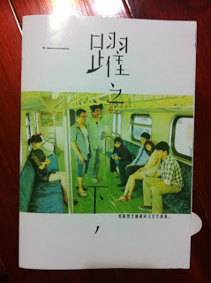
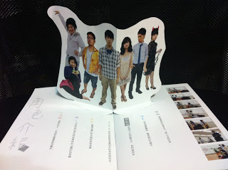
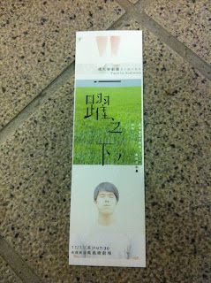

哈，真的去看了第二次。我必須說，雖然劇情我早已知悉，雖然演員的動作、喜怒哀樂依然記憶猶新，但我還是隨著故事的腳步，偷偷哭了…
劇中的親情、愛情，依舊動人心弦，並不因為我知道它只是個故事而顯得冷清。我想這就是我喜歡面劇團的原因吧？或是我天生就這麼多愁善感(?) 希望不要….= =a
來談談今天看到的一些不同吧。（第零個不同是今天隔壁帶了一枚檸檬一起去看XD）
首先是進場時間比較早了，大概 19:20 就開放讓無票觀眾入場了。所以我也特別仔細觀賞了一下進場影片，昨天沒有什麼特別感覺，因為影片事實上沒有什麼內容，只有演員跟角色而已，而且圖也看不太懂….只有阿堂的名字旁邊出現的圖看起來比較像人….其他的名字旁邊出現的圖….我看不太出來那代表什麼orz。但是啊，做得很精緻耶！還記得當時我說「影痴謀殺」的開場做得太粗糙，這次完全不會有這種感覺！不論內容的話，其實對於氣氛的營造還蠻好的 :)
開場前的….廣播？總之就是那個聲音說：「歡迎各位前來欣賞面劇團的一躍之下….(之類的)」，她昨天念「ㄧㄠˋ」，今天念「ㄩㄝˋ」唷！XD。然後開場時，我很壞的一直看後面:P。不過因為滿暗的，所以分辨不出哪個是阿堂，直到真的開始後才看到。其實我覺得這樣的開場非常棒！很有驚喜感，也同時象徵了「阿堂也只是群眾中的一個人」這樣的意義。李聿堂，你…..又跳一次了。XD
噢，如果剛剛那算是第零幕的話，那第一幕的開頭出了點小包，真可惜啊。你們不是故意的啦！ :)
另外啊，今天講話超級快的狀況比昨天好一些了，但還是有些地方講好快我都聽不懂。 :(
對了，我想應該很多觀眾會有一樣的感覺，就是劇中有些台詞實在相當的…..具有文學氣息…..也許這是編劇或導演的堅持吧，我抓不太到這樣的設計有什麼特別的用意，尤其是這類相當不白話的台詞比例並不低，究竟有什麼樣的意涵是我體會不到的呢？但無論如何，雖然覺得有點突兀，那些台詞確實是滿美的。「那瞬間支離破碎又空空蕩蕩….」這是導覽手冊封面所寫的台詞。


手冊封面旁邊看到的小半圓形其實是立體折頁的邊邊
說到台詞，「一躍之下，」的台詞的確相當值得玩味！我實在記不得全部，不過提起這些台詞，也許會心一笑，也許心有戚戚。舉幾個例子吧：「人生只有 regret，沒有 restart。」不僅趣味，卻也深刻。「我以為我可以讓別人後悔，沒想到最後悔的，是我自己。」這好似一記重擊打中我的心啊，是不是應該，應該更仔細的想想呢？「七歲…十歲…..十九歲……….二十歲勒？三十歲勒？我的阿堂勒？」想到不禁令人鼻酸。「妳相信我們的愛情，而我相信妳。」這是多美的承諾？卻又在多久以後，崩壞？「這裡不是什麼地方，這裡哪裡都不是！」是否表示到了此處的阿堂，也什麼都不是了呢？
「我寫不出論文！」我的天啊這句話好像是我吼的一樣….會不會哪天我也被逼急了，而這樣怒吼著呢？阿堂，我超同情你的，你的難過和你的壓力我絕對相當瞭解…..我說真的！
孩子是阿堂的。我昨天關於這個部分有些疑惑，但今天搞清楚了。小魚是在還沒接受陳寬之前就已經先發現自己懷孕的事實，並因為懷孕了，所以只好接受陳寬，否則孩子出生就沒有爸爸。但，有些疑惑的是，究竟小魚愛不愛陳寬呢？劇中的種種過程似乎都顯示了小魚只是勉強自己與陳寬在一起，像是小魚對陳寬有意無意的婉拒，或是在公園時，小魚回答陳寬的問題只說了：「我跟寶寶都愛爸爸。…….你是爸爸。」這似乎暗示了小魚愛的依然是交往六年的阿堂，只是欺騙或是安撫陳寬他將要當孩子的爸的事實。只是…..我不懂，為什麼小魚會拿陳寬的襯衫來穿呢？甚至說了「不是你穿的就不行。」這種話….也許小魚的心中存有矛盾，或是導演跟編劇的心裡有矛盾呢？
令人疑惑的地方還有一些，像是小魚說「朋友都說，他跟我交往是他賺到了，要我好好把握。」這好像不太對吧…..XD？還是我聽錯了呢？還有，阿堂跟小魚應是年紀相仿的同年級同學才對，但是社團博覽會的時候阿堂竟然在擺攤，並讓小魚加入社團，似乎有點不太對勁。另外，小次郎在最後說「如果他沒有自殺，也許他爸爸就不會離開他媽媽了。」但，阿堂在生前接到的最後一通電話不是阿堂的母親告訴他「父親跟一個酒家女跑了」嗎？似乎只有一個合理的解釋就是小次郎太天兵了XD。
想起陳寬出門上班的那一幕，他那回眸一笑的「Bye bye.」實在非常有喜感….XD。「我不知道！」是阿堂好幾次對小魚說的話…..雖然是個很低潮的橋段，可是我每聽到一次「我不知道！」的時候，就一直忍不住想到「三壘！」（語出相聲 - 誰在一壘）。對了，都忘記提到那些天人們的…髒話了。「閻羅王！….」這在我們這種凡人聽起來真是相當的文雅啊，真不愧是住在「上面」的，連講話都不一樣！還有好多有趣的地方實在很難一一列出，我的記憶體實在太有限了…..如果下次還有機會，建議讀者(如果你正在讀這段文字，你就是讀者)可以去欣賞，因為這場演出絕對可以讓你大笑，也可以讓你落淚，就像是從「上面」掉到「下面」一樣！
今天的結束有點小小失望，本來以為有機會可以上台跟演員們合影(不是在叫楊三毛同學XD)的，不過被小萍清場了XDDD。走到外面填寫回饋單，今天留了資料，不過看到那一~長串的欄位我真的沒力氣寫….說好要寫在 blog 上的。
給每位角色的話
- 阿堂：人帥真好+主角命的羅同學，我已經不小心記得你的名字了！今天結束後在門口有看到你拿著一支花走進來，不過太害羞了不好意思叫你….嘿，你演得很棒喔！無論是喜怒哀樂都相當鮮明，加上宏亮的聲音，有自信的表現，想必會有很多粉絲。:P
噢對了，我很佩服你舌頭打結還可以立刻改回正確的句子這件事！ - 派哥：我只記得你叫威寶….也是個相當有特色的角色，喜感也表現得淋漓盡致(我整個像是被洗腦了我)，從手冊中了解到似乎你也對自己做了很大的突破，在我看來，你的突破相當成功唷！
- 小次郎：很成功的配角。想必在服裝方面是很大的挑戰，我真的不敢打扮成那樣….看你在阿堂掏心掏肺的傾訴時，還能在一旁淡定的玩你的寵物，也是蠻厲害的啦XD！第一天雖然卡詞卡了不少，不過第二天改善很多！
- 小魚：好像表情不太豐富唷，你的笑容都是淡淡的微笑，如果再明顯一點的話，快樂的氛圍會更強烈，而且笑起來比較好看。第一天的演出我比較喜歡，說話的流暢度不錯。因為這個角色具有強烈的意義，並且無聲戲(不曉得有沒有專門的名詞)很多，所以豐富臉上的表情會很棒！也能讓整齣戲加分！
- 陳寬：說實在話我不是很喜歡這個角色…XD，不過我只是單純討厭「陳經理」的行為啦！你是個相當有喜感的人啊~至少我看起來是這樣。雖然戲份不很多，但是有正妹可以抱真是賺到了，哈哈！
- 娜娜：戲份相當少的角色，從頭到尾也都是一貫的冷酷風格，但是出場相當亮眼。隔壁的檸檬說你相當適合這個角色！
- 婦人：（駝背好像有點裝太低）雖然到故事尾聲才出現，卻是相當、相當重要的角色。你的演出非~~常棒！有真的把一個失心瘋的母親心情發揮出來唷！時而笑、時而哭，總是尋找著孩子，卻總是遍尋不著自己的孩子，那股悲傷，看了真的令人為之動容。另外「影痴謀殺」時看過你演 Coco 這個角色，對你的演技相當佩服，很厲害，真的！
碎碎念
- 真可惜沒機會跟演員合照，也沒機會請演員在海報上簽名XD
- 發現表情真的是演戲很重要的因素，像小魚的表現其實也滿好的，只是表情不夠豐富就凸顯不出他的好。這部份就可以跟阿堂和阿堂他媽學習，兩位連莊演員，都有很吸引人的臉部演出這樣。
- 我真的不是親友團，一定要說的話，我只能算是粉絲團吧！還是有誰要來認識我一下讓我下次可以當親友團呢？:p
- 阿堂跟小魚轉圈圈轉好久….我如果沒看錯的話其實阿堂很想停下來對嗎？XD
- 故事步調真的好快，好快就求婚好快就交往好快就畢業好快就分手…什麼都好快….不過快一點比較好，這樣心中的滿足感會比較強烈！
- 發現手冊裡羅同學的綽號叫小張，是演完影痴謀殺就被定型了嗎XD？
- 這次的視覺設計部分，有一半做得很棒，像是海報、門票、還有一些主要元素等等。但是像手冊感覺就比較粗糙…不過我也不是設計專家，只好期待下次的視覺設計更加完美！
- 今天排隊的時候跟隔壁的護理系同學搭訕了一下…….(羞)，謝謝他借我他的票讓我可以拍照！:P

這次演出，算是成大 80 週年校慶的一個部分，待在成大已經邁入第七年的我，在這裡向成大說聲「生日快樂！」成大八十大壽囉，以後也要繼續長大！
謝謝面劇團帶給我這兩個晚上豐富的體驗，有視覺上的也有心靈上的，謝謝你們，謝謝面劇團的所有幕前幕後工作人員！你們很棒！你們的表演很棒！你們的努力很棒！
Last modified on 2011-11-11